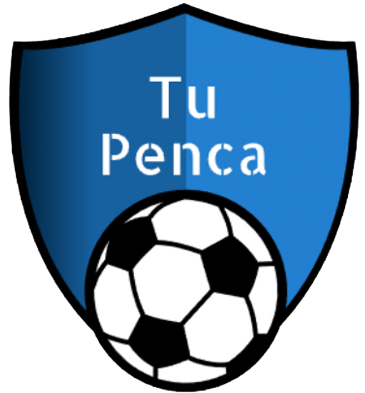

<header>
  <nav class="navbar navbar-expand-lg navbar-light bg-light">
    <a [routerLink]="'/'"></a>
    <button class="navbar-toggler" type="button" data-toggle="collapse" data-target="#navbarSupportedContent" aria-controls="navbarSupportedContent" aria-expanded="false" aria-label="Toggle navigation">
      <span class="navbar-toggler-icon"></span>
    </button>
  
    <div class="collapse navbar-collapse" id="navbarSupportedContent">
      <ul class="navbar-nav mr-auto">
        <li class="nav-item dropdown">
          <a class="nav-link dropdown-toggle" href="#" id="navbarDropdown" role="button" data-toggle="dropdown" aria-haspopup="true" aria-expanded="false">
            MENU
          </a>
          <div class="dropdown-menu" aria-labelledby="navbarDropdown">
            <a class="dropdown-item" href="#"></a>
            <a class="dropdown-item" href="#">Another action</a>
          </div>
        </li>
      </ul>
      <form class="form-inline my-2 my-lg-0">
        <a class="btn btn-outline-success my-2 my-sm-0" [routerLink]="'/login'">Login</a>
      </form>
    </div>
  </nav>
</header>
  
           
<router-outlet></router-outlet>

<footer class="text-center text-lg-start bg-light text-muted fixed-bottom">
  <div class="text-center p-4" style="background-color: rgba(0, 0, 0, 0.05);">
      <div class="col-md-3 col-lg-4 col-xl-3 mx-auto mb-4">
          <h6 class="text-uppercase fw-bold mb-4">
            <i class="fas fa-gem me-3"></i> Qué es Tu Penca?
          </h6>
          <h6 class="text-uppercase fw-bold mb-4">
              Es una plataforma de pronósticos donde cada participante predice los resultados de los partidos, el ganador es quien obtuvo más puntos     
          </h6>
      </div>© 2022 Proyecto.NET:
    <a class="text-reset fw-bold">tupenca@gmail.com</a>
  </div>
</footer>
